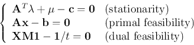

Next: About this document ...
Up: interior
Previous: Interior Point Methods
The Lagrangian is
and we can set
and get the KKT conditions:
where we have defined
We now introduce the logarithmic barrier function to replace the
inequality constraint
, the new Lagrangian is:
Here the constrant
is no longer needed due
to the logarithmic term. To maximize this Lagrangian, we set
its gradient to zero and get
where we have defined
Combine these equations together we get

Also, as
and , we have
.
We note that these equations are very similar to the KKT conditions
listed above, except the last condition, which becomes the same if
.
To find the optimal solution in terms of
and ,
as well as  that which satisfy the KKT conditions for the
optimization, we solve the set of nonlinear equations above by
Newton-Raphson's method. Specifically, we first combine the three
functions into a single function of all three variables
,
, and find its Jacobian
, and then find the Newton direction
,
that which satisfy the KKT conditions for the
optimization, we solve the set of nonlinear equations above by
Newton-Raphson's method. Specifically, we first combine the three
functions into a single function of all three variables
,
, and find its Jacobian
, and then find the Newton direction
,
 and
, which can be obtained by
solving the linear system:
and
, which can be obtained by
solving the linear system:
an initial guess
Next: About this document ...
Up: interior
Previous: Interior Point Methods
Ruye Wang
2016-10-04
![\begin{displaymath}
{\bf f}({\bf x},{\bf\lambda},{\bf\mu})=\left[\begin{array}{l...
...\bf0} & {\bf0}\\
{\bf M} & {\bf0} & {\bf X}\end{array}\right]
\end{displaymath}](img69.png)